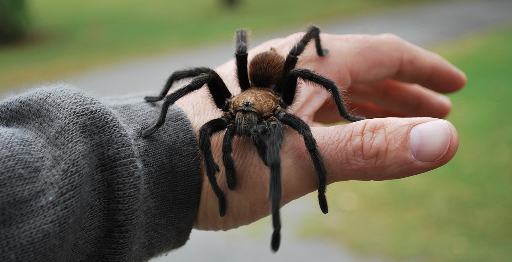

Spiders aren't that scary
Spiders are air-breathing arthropods that have eight legs, chelicerae with fangs generally able to inject venom, and spinnerets that extrude silk. They are the largest order of arachnids and rank seventh in total species diversity among all orders of organisms.
| Name | Size | Color | Features |
|---|---|---|---|
| American House Spider | Small to Medium | Brown, tan or greyish | Rounded abdomen |
| Long-Bodied Cellar Spider | Small, round body | Light-brownish, tan, grey | Long, skinny legs |
| Brown Recluse | Oval body, around 1/3" long | Brown or greyish/td> | 3 pairs of eyes plus dark, violin-shaped marking on body |
| Sac Spiders | Oval body, 1/2" long | Yellow, light-collored, beige | 2 rows of 8 small eyes |
| Jumping Spiders | Compact | Brown, tan, black, grey and beige | Dense Hair |
| Wolf Spiders | More than an inch of long | Brown, tan, black, greyish-beige | Elongated body with hairy-looking legs |
| Hobo Spiders / Funnelweavers | oblong body, almost 1/2" long | Brownish, tan | Solid color with no markings |
| There are 7 types in total | |||